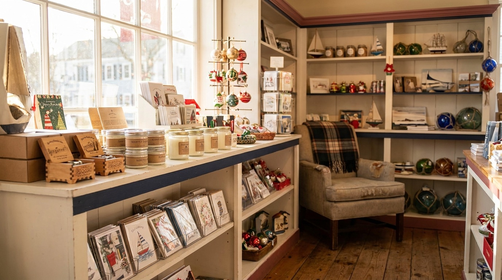
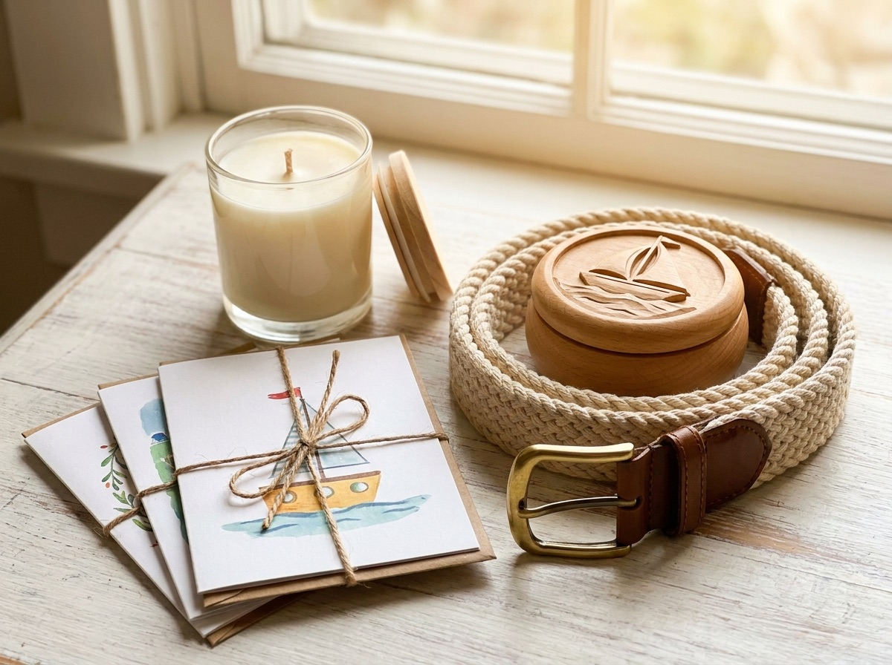

Cards, stationery & giftwrap
Birthday cards, thank-you notes and wrapping for whatever you found here.

Village gift shop · Essex Village, Connecticut
Cards, music boxes, candles and the Essex-made nautical belts people come back for. We have been here since 1983, right across from the Griswold Inn.
The corner since 1983
Gracie's Corner is a small, owner-run gift shop in the middle of Essex Village. It is part of a family-run cluster of shops people wander between on a Saturday afternoon, and it has been a fixture on Main Street since 1983.
The shop sits right across from the Griswold Inn, so there is always someone walking by. Step in and you will find the kind of small, well-chosen things you actually want to give to someone. A card, a candle, a music box, a belt made down the street.
See what is on the shelves →On the shelves
Most of what we carry is the sort of gift you can pick up on a walk through the village and not think twice about. Here is some of it.
Birthday cards, thank-you notes and wrapping for whatever you found here.
Wind-up music boxes and Christmas ornaments worth coming back for in December.
Our signature. Belts made right here in Essex, the thing people remember us by.
Toys, treats and collars for the dog waiting outside on the leash.
Candles and a rotating shelf of goods made by people nearby.
Small, Essex-made keepsakes to take a bit of the village home with you.
Stock changes with the seasons. Call the shop and we will tell you what just came in. (860) 767-2350

The thing we are known for
A lot of people first walk in because someone told them about the belts. They are made right here in Essex, woven in colors that suit a town on the river, and they wear in nicely over the years.
They make an easy gift for someone who already has everything else. If you saw one on a visit and want another once you are home, call and we will help you sort it out.
Find the corner
We are on Main Street in historic Essex Village, right across from the Griswold Inn. Park once and you can walk the whole street, and we are one of the shops worth a stop.